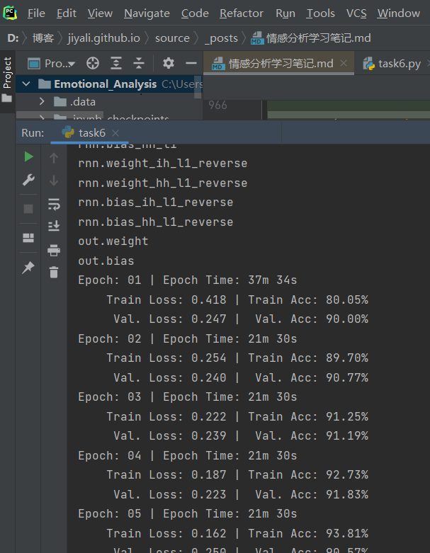

记录datawhale九月份的学习，地址：情感分析
Task0：自然语言处理之PyTorch情感分析简介
从来没有接触过情感分析，一切都要从零开始，这次大航海的教程好像都是实战为主的，有点怀疑自己能不能跟得上。先记录一下task0遇到的问题。
问题
环境配置按照教程的问题不大，进行到以下语句的时候出现了 ‘[WinError 10061] 由于目标计算机积极拒绝，无法连接’ 的问题
python -m spacy download zh_core_web_sm
python -m spacy download en_core_web_sm解决办法
搜解决办法好多需要改防火墙设置什么的，而且不怎么奏效，索性直接选择了离线安装的办法。
- zh_core_web_sm下载地址：
https://github.com/explosion/spacy-models/releases/tag/zh_core_web_sm-3.1.0 - en_core_web_sm下载地址：
https://github.com/explosion/spacy-models/releases/tag/en_core_web_sm-3.1.0
下载完成后运行即可
pip install zh_core_web_sm-3.1.0.tar.gz
pip install en_core_web_sm-3.1.0.tar.gz插曲
记录一下不应该成为问题的问题：中间安装环境的时候，出现了一大片红色（真的好久没有见过这么大片的红），并提示ValueError: check_hostname requires server_hostname 的错误，关闭科学上网工具后解决。fine~
Task1:情感分析baseline
任务简介：使用pytorch和torchtext构造一个简单的模型预测情绪（正面或负面）
数据集：IMDb数据集
预处理
1.torchtext
torchtext包含以下组件：
- Field :主要包含以下数据预处理的配置信息，比如指定分词方法，是否转成小写，起始字符，结束字符，补全字符以及词典等等。此次教程中需要指定一个 tokenizer_language 来告诉 torchtext 使用哪个 spaCy 模型。我们使用 en_core_web_sm 模型。
en_core_web_sm模型的下载地址：https://github.com/explosion/spacy-models/releases/tag/en_core_web_sm-3.1.0 安装时运行 pip install en_core_web_sm-3.1.0.tar.gz - Dataset :继承自pytorch的Dataset，用于加载数据，提供了TabularDataset可以指点路径，格式，Field信息就可以方便的完成数据加载。同时torchtext还提供预先构建的常用数据集的Dataset对象，可以直接加载使用，splits方法可以同时加载训练集，验证集和测试集。
- Iterator : 主要是数据输出的模型的迭代器，可以支持batch定制
import torch
from torchtext.legacy import data
# 设置随机种子数，该数可以保证随机数是可重复的
SEED = 1234
# 设置种子
torch.manual_seed(SEED)
torch.backends.cudnn.deterministic = True
# 读取数据和标签
TEXT = data.Field(tokenize = 'spacy', tokenizer_language = 'en_core_web_sm')
LABEL = data.LabelField(dtype = torch.float)
# 下载 IMDb 数据集
from torchtext.legacy import datasets
train_data, test_data = datasets.IMDB.splits(TEXT, LABEL)
# 查看训练集和测试集的大小
print(f'Number of training examples: {len(train_data)}')
print(f'Number of testing examples: {len(test_data)}')
# 查看其中一个示例数据
print(vars(train_data.examples[0]))2.划分数据集
IMDb 数据集划分了训练集和测试集，这里我们还需要创建一个验证集。 可以使用 .split() 方法来做。（ 注：将之前设置的随机种子SEED传递给 random_state 参数，确保我们每次获得相同的训练集和验证集。 ）
import random
train_data, valid_data = train_data.split(split_ratio=0.8 , random_state = random.seed(SEED))
# 查看训练集，验证集和测试集分别有多少数据
print(f'Number of training examples: {len(train_data)}')
print(f'Number of validation examples: {len(valid_data)}')
print(f'Number of testing examples: {len(test_data)}')3.构建词汇表
- 由于模型不能直接对字符串进行操作，只能对数字进行操作，所以需要建立一下查找表，每个单词都有唯一对应的index。
- onehot编码在此不适用（训练集中不同的单词数量巨大，训练的代价大），需要优化，优化方案有：只取前n个出现次数最多的单词作为one-hot的基，另一种是忽略出现次数小于m个的单词。（这里使用前者）
- 优化后的onehot会出现很多单词虽然在数据集中，但是无法编码的情况，这里还要引进两个特殊的符号来编码，一个是
用来处理前面所说的问题，另一个是 ，用于句子的填充。 MAX_VOCAB_SIZE = 25000 # 词汇表的最大长度 TEXT.build_vocab(train_data, max_size = MAX_VOCAB_SIZE) LABEL.build_vocab(train_data) print(f"Unique tokens in TEXT vocabulary: {len(TEXT.vocab)}") print(f"Unique tokens in LABEL vocabulary: {len(LABEL.vocab)}")
4.创建迭代器
- 准备数据的最后一步是创建迭代器. 需要创建验证集，测试集，以及训练集的迭代器, 每一次的迭代都会返回一个batch的数据。
- 本例中使用“BucketIterator”，它将返回一批示例，其中每个样本的长度差不多，从而最小化每个样本的padding数。
- 用torch.device，可以将张量放到gpu或者cpu上。
BATCH_SIZE = 64 device = torch.device('cuda' if torch.cuda.is_available() else 'cpu') train_iterator, valid_iterator, test_iterator = data.BucketIterator.splits( (train_data, valid_data, test_data), batch_size = BATCH_SIZE, device = device)
构建模型
- 首先关于初始化的问题，在某些框架中，使用RNN需要初始化 ℎ0 ，但在pytorch中不用，默认为全0。
- 构建一个RNN模型(nn.module子类)
import torch.nn as nn class RNN(nn.Module): def __init__(self, input_dim, embedding_dim, hidden_dim, output_dim): super().__init__() self.embedding = nn.Embedding(input_dim, embedding_dim) self.rnn = nn.RNN(embedding_dim, hidden_dim) self.fc = nn.Linear(hidden_dim, output_dim) def forward(self, text): #text = [sent len, batch size] embedded = self.embedding(text) #embedded = [sent len, batch size, emb dim] output, hidden = self.rnn(embedded) #output = [sent len, batch size, hid dim] #hidden = [1, batch size, hid dim] assert torch.equal(output[-1,:,:], hidden.squeeze(0)) return self.fc(hidden.squeeze(0)) - 设置超参数
INPUT_DIM = len(TEXT.vocab) EMBEDDING_DIM = 100 HIDDEN_DIM = 256 OUTPUT_DIM = 1
训练
- 设置优化器：SGD
- 定义损失函数：BCEWithLogitsLoss一般用来做二分类
import torch.optim as optim optimizer = optim.SGD(model.parameters(), lr=1e-3) criterion = nn.BCEWithLogitsLoss() model = model.to(device) criterion = criterion.to(device) - 设置训练函数和评估函数
训练函数和评估函数是相似的，评估时不需要再进行梯度计算，所以使用with no_grad()，去掉了optimizer.zero_grad(), loss.backward() , optimizer.step()def train(model, iterator, optimizer, criterion): epoch_loss = 0 epoch_acc = 0 model.train() for batch in iterator: optimizer.zero_grad() predictions = model(batch.text).squeeze(1) loss = criterion(predictions, batch.label) acc = binary_accuracy(predictions, batch.label) loss.backward() optimizer.step() epoch_loss += loss.item() epoch_acc += acc.item() return epoch_loss / len(iterator), epoch_acc / len(iterator) def evaluate(model, iterator, criterion): epoch_loss = 0 epoch_acc = 0 model.eval() with torch.no_grad(): for batch in iterator: predictions = model(batch.text).squeeze(1) loss = criterion(predictions, batch.label) acc = binary_accuracy(predictions, batch.label) epoch_loss += loss.item() epoch_acc += acc.item() return epoch_loss / len(iterator), epoch_acc / len(iterator) - 最后保留在验证集上的损失值最小的模型
N_EPOCHS = 5 best_valid_loss = float('inf') for epoch in range(N_EPOCHS): start_time = time.time() train_loss, train_acc = train(model, train_iterator, optimizer, criterion) valid_loss, valid_acc = evaluate(model, valid_iterator, criterion) end_time = time.time() epoch_mins, epoch_secs = epoch_time(start_time, end_time) if valid_loss < best_valid_loss: best_valid_loss = valid_loss torch.save(model.state_dict(), 'tut1-model.pt') print(f'Epoch: {epoch+1:02} | Epoch Time: {epoch_mins}m {epoch_secs}s') print(f'\tTrain Loss: {train_loss:.3f} | Train Acc: {train_acc*100:.2f}%') print(f'\t Val. Loss: {valid_loss:.3f} | Val. Acc: {valid_acc*100:.2f}%')
小结
贴一张训练结果图
实验结果的准确率很低，有可能是本身RNN是一个很简单的模型，做不了太复杂的任务，另外word_embedding这里使用的是onehot，也会影响模型准确率~
Task2：Updated情感分析
此次任务使用的是双向LSTM网络，并修改了基础模型的词向量，改用Glove
数据预处理
准备数据阶段与上次任务相同，这里不再赘述
- 词向量（Glove）
这次任务使用的是 “glove.6B.100d” ，其中，6B表示词向量是在60亿规模的tokens上训练得到的，100d表示词向量是100维的(注意,这个词向量有800多兆)MAX_VOCAB_SIZE = 25_000 TEXT.build_vocab(train_data, max_size = MAX_VOCAB_SIZE, vectors = "glove.6B.100d", unk_init = torch.Tensor.normal_) LABEL.build_vocab(train_data) - 迭代器与GPU设置也不再赘述
构建模型
有关LSTM
RNN作为一种处理序列数据的神经网络，序列数据通常会有上下文之间的影响，RNN通过让上一时刻的隐藏层影响当前时刻的隐藏层来解决序列间关系的问题。但是RNN还存在一些漏洞，比如在长序列数据处理中存在梯度消失的问题，长序列处理中，梯度被近距离梯度主导，导致模型难以学到远距离的依赖关系。而LSTM则解决了此问题
LSTM的关键是细胞状态（直译：cell state），表示为$C_t$ ，用来保存当前LSTM的状态信息并传递到下一时刻的LSTM中，也就是RNN中那根“自循环”的箭头。当前的LSTM接收来自上一个时刻的细胞状态 $C_{t-1}$ ，并与当前LSTM接收的信号输入 $x_t$ 共同作用产生当前LSTM的细胞状态 $C_t$，具体的作用方式下面将详细介绍。
LSTM主要包括三个不同的门结构：遗忘门、记忆门和输出门。这三个门用来控制LSTM的信息保留和传递，最终反映到细胞状态 $C_t$和输出信$h_t$ 。
*遗忘门由一个sigmod神经网络层和一个按位乘操作构成；
*记忆门由输入门（input gate）与tanh神经网络层和一个按位乘操作构成；
*输出门（output gate）与 tanh函数（注意：这里不是tanh神经网络层）以及按位乘操作共同作用将细胞状态和输入信号传递到输出端。
遗忘门
记忆门
更新细胞状态
输出门:
模型搭建
import torch.nn as nn
class RNN(nn.Module):
def __init__(self, vocab_size, embedding_dim, hidden_dim, output_dim, n_layers,
bidirectional, dropout, pad_idx):
super().__init__()
# 词嵌入
self.embedding = nn.Embedding(vocab_size, embedding_dim, padding_idx = pad_idx)
# 双向LSTM
self.rnn = nn.LSTM(embedding_dim, # input_size
hidden_dim, #output_size
num_layers=n_layers, # 层数
bidirectional=bidirectional, #是否双向
dropout=dropout) #随机去除神经元
self.fc = nn.Linear(hidden_dim * 2, output_dim) # 因为前向传播+后向传播有两个hidden sate,且合并在一起,所以乘以2
self.dropout = nn.Dropout(dropout)
def forward(self, text, text_lengths):
embedded = self.dropout(self.embedding(text))
packed_embedded = nn.utils.rnn.pack_padded_sequence(embedded, text_lengths.to('cpu'))
packed_output, (hidden, cell) = self.rnn(packed_embedded)
hidden = self.dropout(torch.cat((hidden[-2,:,:], hidden[-1,:,:]), dim = 1))
return self.fc(hidden)实例化模型
（由于我是GTX1660Ti的显卡，在训练过程中出现问题，所以将教程中的超参数HIDDEN_DIM 改为了128）
INPUT_DIM = len(TEXT.vocab) # 250002: 之前设置的只取25000个最频繁的词,加上pad_token和unknown token
EMBEDDING_DIM = 100
HIDDEN_DIM = 128 #原教程为256
OUTPUT_DIM = 1
N_LAYERS = 2
BIDIRECTIONAL = True
DROPOUT = 0.5
PAD_IDX = TEXT.vocab.stoi[TEXT.pad_token] #指定参数,定义pad_token的index索引值,让模型不管pad token
model = RNN(INPUT_DIM,
EMBEDDING_DIM,
HIDDEN_DIM,
OUTPUT_DIM,
N_LAYERS,
BIDIRECTIONAL,
DROPOUT,
PAD_IDX)训练
这里的优化器更改为Adam，损失函数还是BCEWithLogitsLoss()
import torch.optim as optim
optimizer = optim.Adam(model.parameters())
criterion = nn.BCEWithLogitsLoss() # 损失函数. criterion 在本task中时损失函数的意思
model = model.to(device)
criterion = criterion.to(device)- 准确率
def binary_accuracy(preds, y):
rounded_preds = torch.round(torch.sigmoid(preds))
correct = (rounded_preds == y).float() #convert into float for division
acc = correct.sum() / len(correct)
return acc- 训练函数与评估函数
这里的训练函数和评估函数也与之前类似，不再贴代码
- 验证
“predict_sentiment”函数的作用如下：
将模型切换为evaluate模式
对句子进行分词操作
将分词后的每个词，对应着词汇表，转换成对应的index索引，
获取句子的长度
将indexes，从list转化成tensor
通过unsqueezing 添加一个batch维度
将length转化成张量tensor
用sigmoid函数将预测值压缩到0-1之间
用item（）方法，将只有一个值的张量tensor转化成整数
import spacy
nlp = spacy.load('en_core_web_sm')
def predict_sentiment(model, sentence):
model.eval()
tokenized = [tok.text for tok in nlp.tokenizer(sentence)]
indexed = [TEXT.vocab.stoi[t] for t in tokenized]
length = [len(indexed)]
tensor = torch.LongTensor(indexed).to(device)
tensor = tensor.unsqueeze(1)
length_tensor = torch.LongTensor(length)
prediction = torch.sigmoid(model(tensor, length_tensor))
return prediction.item()小结
贴一张训练图片
task3：Faster 情感分析
有关fastText
- fastText为每个n字符的gram训练一个向量表示，其中包括词、拼错的词、词片段甚至是单个字符。
- fastText 模型架构和 Word2Vec 的 CBOW 模型类似 。和CBOW一样，fastText模型也只有三层：输入层、隐含层、输出层（Hierarchical Softmax），输入都是多个经向量表示的单词，输出都是一个特定的target，隐含层都是对多个词向量的叠加平均。不同的是，CBOW的输入是目标单词的上下文，fastText的输入是多个单词及其n-gram特征，这些特征用来表示单个文档；CBOW的输入单词被onehot编码过，fastText的输入特征是被embedding过；CBOW的输出是目标词汇，fastText的输出是文档对应的类标。fastText在输入时，将单词的字符级别的n-gram向量作为额外的特征；在输出时，fastText采用了分层Softmax，大大降低了模型训练时间。
数据预处理
FastText分类模型与其他文本分类模型最大的不同之处在于其计算了输入句子的n-gram，并将n-gram作为一种附加特征来获取局部词序特征信息添加至标记化列表的末尾。
本次task使用bi-grams。即字节大小为2
def generate_bigrams(x):
n_grams = set(zip(*[x[i:] for i in range(2)]))
for n_gram in n_grams:
x.append(' '.join(n_gram))
return x其他像导入包和加载数据构建迭代器等的步骤同上，不再贴代码~
构建模型
import torch.nn as nn
import torch.nn.functional as F
class FastText(nn.Module):
def __init__(self, vocab_size, embedding_dim, output_dim, pad_idx):
super().__init__()
self.embedding = nn.Embedding(vocab_size, embedding_dim, padding_idx=pad_idx)
self.fc = nn.Linear(embedding_dim, output_dim)
def forward(self, text):
embedded = self.embedding(text)
embedded = embedded.permute(1, 0, 2)
pooled = F.avg_pool2d(embedded, (embedded.shape[1], 1)).squeeze(1)
return self.fc(pooled)
INPUT_DIM = len(TEXT.vocab)
EMBEDDING_DIM = 100
OUTPUT_DIM = 1
PAD_IDX = TEXT.vocab.stoi[TEXT.pad_token]
model = FastText(INPUT_DIM, EMBEDDING_DIM, OUTPUT_DIM, PAD_IDX)训练模型
基本也是与之前相同，不赘述
小结
贴一个结果图,
fastText相对上一次任务的双向LSTM来说，速度快了不少，由于使用了一些特有的技巧，训练效果也得到了提升。
task4：卷积情感分析
呕吼~一直以为卷积只是用来处理图片的，没想到还能用来处理文本
卷积神经网络能够从局部输入图像块中提取特征，并能将表示模块化，同时可以高效第利用数据;可以用于处理时序数据，时间可以被看作一个空间维度，就像二维图像的高度和宽度
至于为什么可以在文本上使用卷积神经网络，原因如下：
- 与3x3 filter可以查看图像块的方式相同，1x2 filter 可以查看一段文本中的两个连续单词，即双字符
- 本模型将使用多个不同大小的filter，这些filter将查看文本中的bi-grams（a 1x2 filter）、tri-grams（a 1x3 filter）and/or n-grams（a 1xn filter）。
数据预处理
这里与fastText不同，不需要再创建bi-gram
import torch
from torchtext.legacy import data
from torchtext.legacy import datasets
import random
import numpy as np
SEED = 1234
random.seed(SEED)
np.random.seed(SEED)
torch.manual_seed(SEED)
torch.backends.cudnn.deterministic = True
TEXT = data.Field(tokenize = 'spacy',
tokenizer_language = 'en_core_web_sm',
batch_first = True)
LABEL = data.LabelField(dtype = torch.float)
train_data, test_data = datasets.IMDB.splits(TEXT, LABEL)
train_data, valid_data = train_data.split(random_state = random.seed(SEED))
MAX_VOCAB_SIZE = 25_000
TEXT.build_vocab(train_data,
max_size = MAX_VOCAB_SIZE,
vectors = "glove.6B.100d",
unk_init = torch.Tensor.normal_)
LABEL.build_vocab(train_data)构建模型
有关TextCNN
卷积神经网络的核心思想是捕捉局部特征，对于文本来说，局部特征就是由若干单词组成的滑动窗口，类似于N-gram。卷积神经网络的优势在于能够自动地对N-gram特征进行组合和筛选，获得不同抽象层次的语义信息。
具体的笔记再补~参考文献中的那个 深入TextCNN（一）详述CNN及TextCNN原理 感觉讲的很好呀
定义模型
import torch.nn as nn
import torch.nn.functional as F
class CNN(nn.Module):
def __init__(self, vocab_size, embedding_dim, n_filters, filter_sizes, output_dim,
dropout, pad_idx):
super().__init__()
self.embedding = nn.Embedding(vocab_size, embedding_dim, padding_idx = pad_idx)
self.conv_0 = nn.Conv2d(in_channels = 1,
out_channels = n_filters,
kernel_size = (filter_sizes[0], embedding_dim))
self.conv_1 = nn.Conv2d(in_channels = 1,
out_channels = n_filters,
kernel_size = (filter_sizes[1], embedding_dim))
self.conv_2 = nn.Conv2d(in_channels = 1,
out_channels = n_filters,
kernel_size = (filter_sizes[2], embedding_dim))
self.fc = nn.Linear(len(filter_sizes) * n_filters, output_dim)
self.dropout = nn.Dropout(dropout)
def forward(self, text):
#text = [batch size, sent len]
embedded = self.embedding(text)
#embedded = [batch size, sent len, emb dim]
embedded = embedded.unsqueeze(1)
#embedded = [batch size, 1, sent len, emb dim]
conved_0 = F.relu(self.conv_0(embedded).squeeze(3))
conved_1 = F.relu(self.conv_1(embedded).squeeze(3))
conved_2 = F.relu(self.conv_2(embedded).squeeze(3))
#conved_n = [batch size, n_filters, sent len - filter_sizes[n] + 1]
pooled_0 = F.max_pool1d(conved_0, conved_0.shape[2]).squeeze(2)
pooled_1 = F.max_pool1d(conved_1, conved_1.shape[2]).squeeze(2)
pooled_2 = F.max_pool1d(conved_2, conved_2.shape[2]).squeeze(2)
#pooled_n = [batch size, n_filters]
cat = self.dropout(torch.cat((pooled_0, pooled_1, pooled_2), dim = 1))
#cat = [batch size, n_filters * len(filter_sizes)]
return self.fc(cat)
INPUT_DIM = len(TEXT.vocab)
EMBEDDING_DIM = 100
N_FILTERS = 100
FILTER_SIZES = [3,4,5]
OUTPUT_DIM = 1
DROPOUT = 0.5
PAD_IDX = TEXT.vocab.stoi[TEXT.pad_token]
model = CNN(INPUT_DIM, EMBEDDING_DIM, N_FILTERS, FILTER_SIZES, OUTPUT_DIM, DROPOUT, PAD_IDX)后续的任务还是与之前相同，不再赘述。
小结
task5：多类型情感分析
进行多分类的情感分析任务时，输出不再是正面负面两个标量了，而是一个C维向量。
数据处理
这次换了一个新的数据集，使用的是TREC数据集而不是IMDB数据集：训练集：5452，测试集：500。
- 加载数据：
import torch
from torchtext import data
from torchtext import datasets
import random
SEED = 1234
torch.manual_seed(SEED)
torch.backends.cudnn.deterministic = True
TEXT = data.Field(tokenize = 'spacy')
LABEL = data.LabelField()
train_data, test_data = datasets.TREC.splits(TEXT, LABEL, fine_grained=False)
train_data, valid_data = train_data.split(random_state = random.seed(SEED))
print(vars(train_data[-1]))- 接下来，我们将构建词汇表。 由于这个数据集很小（只有约 3800 个训练样本），它的词汇量也非常小（约 7500 个不同单词，即one-hot向量为7500维），这意味着我们不需要像以前一样在词汇表上设置“max_size”。
MAX_VOCAB_SIZE = 25_000
TEXT.build_vocab(train_data,
max_size = MAX_VOCAB_SIZE,
vectors = "glove.6B.100d",
unk_init = torch.Tensor.normal_)
LABEL.build_vocab(train_data)- 检查标签
6 个标签（对于非细粒度情况）对应于数据集中的 6 类问题：
HUM：关于人类的问题
ENTY：关于实体的问题的
DESC：关于要求提供描述的问题
NUM：关于答案为数字的问题
LOC：关于答案是位置的问题
ABBR：关于询问缩写的问题
构建模型
这次使用Task04中的CNN模型，将之前模型中的 output_dim 改为 𝐶 维而不是 2 维即可，同时确保将输出维度： OUTPUT_DIM 设置为 𝐶
import torch.nn as nn
import torch.nn.functional as F
class CNN(nn.Module):
def __init__(self, vocab_size, embedding_dim, n_filters, filter_sizes, output_dim,
dropout, pad_idx):
super().__init__()
self.embedding = nn.Embedding(vocab_size, embedding_dim)
self.convs = nn.ModuleList([
nn.Conv2d(in_channels = 1,
out_channels = n_filters,
kernel_size = (fs, embedding_dim))
for fs in filter_sizes
])
self.fc = nn.Linear(len(filter_sizes) * n_filters, output_dim)
self.dropout = nn.Dropout(dropout)
def forward(self, text):
text = text.permute(1, 0)
embedded = self.embedding(text)
embedded = embedded.unsqueeze(1)
conved = [F.relu(conv(embedded)).squeeze(3) for conv in self.convs]
pooled = [F.max_pool1d(conv, conv.shape[2]).squeeze(2) for conv in conved]
cat = self.dropout(torch.cat(pooled, dim = 1))
return self.fc(cat)
INPUT_DIM = len(TEXT.vocab)
EMBEDDING_DIM = 100
N_FILTERS = 100
FILTER_SIZES = [2,3,4]
OUTPUT_DIM = len(LABEL.vocab)
DROPOUT = 0.5
PAD_IDX = TEXT.vocab.stoi[TEXT.pad_token]
model = CNN(INPUT_DIM, EMBEDDING_DIM, N_FILTERS, FILTER_SIZES, OUTPUT_DIM, DROPOUT, PAD_IDX)损失函数
与前几个notebook比,损失函数(也就是criterion)是不同的.之前用的是BCEWithLogisLoss,现在使用的是CrossEntropyLoss,它使用的是softrmax函数,来计算cross entropy
一般来说:
- CrossEntropyLoss :用于多分类问题
- BCEWithLogitsLoss :用于2分类问题,(0,1),也用于多标签分类(multilabel classification) 1vs rest
import torch.optim as optim
optimizer = optim.Adam(model.parameters())
criterion = nn.CrossEntropyLoss()
model = model.to(device)
criterion = criterion.to(device)小结
贴一个结果图
task6：使用Transformer进行情感分析
数据准备
本次任务使用的是Bert模型，由于模型很大，参数很多，所以将固定（而不训练）transformer，只训练从transformer产生的表示中学习的模型的其余部分。
在这种情况下，我们将使用双向GRU继续提取从Bert embedding后的特征。最后在fc层上输出最终的结果。
- 导入相关库，并设定随机种子
import torch
import random
import numpy as np
SEED = 1234
random.seed(SEED)
np.random.seed(SEED)
torch.manual_seed(SEED)
torch.backends.cudnn.deterministic = Truetransformers 库为每个提供的transformer 模型都有分词器。 在这种情况下，我们使用忽略大小写的 BERT 模型（即每个单词都会小写）。 我们通过加载预训练的“bert-base-uncased”标记器来实现这一点。
from transformers import BertTokenizer
tokenizer = BertTokenizer.from_pretrained('bert-base-uncased')使用tokenizer.tokenize方法对字符串进行分词，并统一大小写。
tokens = tokenizer.tokenize('Hello WORLD how ARE yoU?')- 定义一个函数处理所有的标记化。
def tokenize_and_cut(sentence):
tokens = tokenizer.tokenize(sentence)
tokens = tokens[:max_input_length-2]
return tokens- 定义标签字段
from torchtext.legacy import data
TEXT = data.Field(batch_first = True,
use_vocab = False,
tokenize = tokenize_and_cut,
preprocessing = tokenizer.convert_tokens_to_ids,
init_token = init_token_idx,
eos_token = eos_token_idx,
pad_token = pad_token_idx,
unk_token = unk_token_idx)
LABEL = data.LabelField(dtype = torch.float)- 拆分出训练集和验证集
from torchtext.legacy import datasets
train_data, test_data = datasets.IMDB.splits(TEXT, LABEL)
train_data, valid_data = train_data.split(random_state = random.seed(SEED))- 创建迭代器
这里依旧是不能用教程里面的参数128，自己训练的时候改为了64
BATCH_SIZE = 128
device = torch.device('cuda' if torch.cuda.is_available() else 'cpu')
train_iterator, valid_iterator, test_iterator = data.BucketIterator.splits(
(train_data, valid_data, test_data),
batch_size = BATCH_SIZE,
device = device)构建模型
- 导入预训练的bert
from transformers import BertTokenizer, BertModel
bert = BertModel.from_pretrained('bert-base-uncased')- 定义模型
*我们将使用预训练的Transformer模型，而不是使用embedding层来获取文本的embedding。然后将这些embedding输入GRU以生成对句子情绪的预测。
*通过config属性从transformer中获取嵌入维度大小（称为hidden_size）,其余初始化是标准的
*在前向传递的过程中，我们将transformer包装在一个no_grad中，以确保不会再模型的这部分计算梯度。
*transformer实际上返回整个序列的embedding以及pooled输入。
*前向传递的其余部分是循环模型的标准实现，我们在最后的时间步长中获取隐藏状态，并将其传递给一个线性层以获得我们的预测。
import torch.nn as nn
class BERTGRUSentiment(nn.Module):
def __init__(self,
bert,
hidden_dim,
output_dim,
n_layers,
bidirectional,
dropout):
super().__init__()
self.bert = bert
embedding_dim = bert.config.to_dict()['hidden_size']
self.rnn = nn.GRU(embedding_dim,
hidden_dim,
num_layers = n_layers,
bidirectional = bidirectional,
batch_first = True,
dropout = 0 if n_layers < 2 else dropout)
self.out = nn.Linear(hidden_dim * 2 if bidirectional else hidden_dim, output_dim)
self.dropout = nn.Dropout(dropout)
def forward(self, text):
with torch.no_grad():
embedded = self.bert(text)[0]
_, hidden = self.rnn(embedded)
if self.rnn.bidirectional:
hidden = self.dropout(torch.cat((hidden[-2,:,:], hidden[-1,:,:]), dim = 1))
else:
hidden = self.dropout(hidden[-1,:,:])
output = self.out(hidden)
return output- 创建实例
HIDDEN_DIM = 256
OUTPUT_DIM = 1
N_LAYERS = 2
BIDIRECTIONAL = True
DROPOUT = 0.25
model = BERTGRUSentiment(bert,
HIDDEN_DIM,
OUTPUT_DIM,
N_LAYERS,
BIDIRECTIONAL,
DROPOUT)训练和评估
- 定义损失函数
import torch.optim as optim
optimizer = optim.Adam(model.parameters())
criterion = nn.BCEWithLogitsLoss()
model = model.to(device)
criterion = criterion.to(device)- 构建训练函数
def train(model, iterator, optimizer, criterion):
epoch_loss = 0
epoch_acc = 0
model.train()
for batch in iterator:
optimizer.zero_grad()
predictions = model(batch.text).squeeze(1)
loss = criterion(predictions, batch.label)
acc = binary_accuracy(predictions, batch.label)
loss.backward()
optimizer.step()
epoch_loss += loss.item()
epoch_acc += acc.item()
return epoch_loss / len(iterator), epoch_acc / len(iterator)- 评估函数
def evaluate(model, iterator, criterion):
epoch_loss = 0
epoch_acc = 0
model.eval()
with torch.no_grad():
for batch in iterator:
predictions = model(batch.text).squeeze(1)
loss = criterion(predictions, batch.label)
acc = binary_accuracy(predictions, batch.label)
epoch_loss += loss.item()
epoch_acc += acc.item()
return epoch_loss / len(iterator), epoch_acc / len(iterator)- 训练
N_EPOCHS = 5
best_valid_loss = float('inf')
for epoch in range(N_EPOCHS):
start_time = time.time()
train_loss, train_acc = train(model, train_iterator, optimizer, criterion)
valid_loss, valid_acc = evaluate(model, valid_iterator, criterion)
end_time = time.time()
epoch_mins, epoch_secs = epoch_time(start_time, end_time)
if valid_loss < best_valid_loss:
best_valid_loss = valid_loss
torch.save(model.state_dict(), 'tut6-model.pt')
print(f'Epoch: {epoch+1:02} | Epoch Time: {epoch_mins}m {epoch_secs}s')
print(f'\tTrain Loss: {train_loss:.3f} | Train Acc: {train_acc*100:.2f}%')
print(f'\t Val. Loss: {valid_loss:.3f} | Val. Acc: {valid_acc*100:.2f}%')小结
训练速度很慢，BATCH_SIZE依旧是不能用教程里面的128，改为64之后训练结束~
贴一张训练图

\[y = {f_{ {g_1}}}(x)\]
参考链接：torchtext入门教程，轻松玩转文本数据处理
[干货]深入浅出LSTM及其Python代码实现
fastText原理及实践
fastText原理和文本分类实战，看这一篇就够了
深入TextCNN（一）详述CNN及TextCNN原理